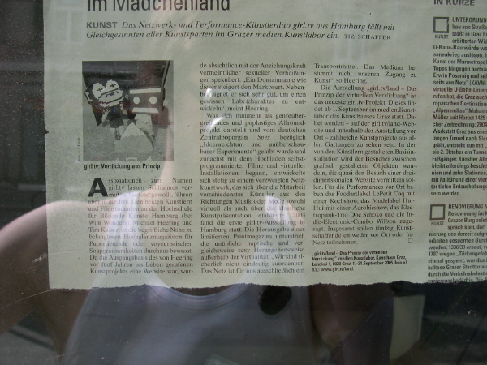

<--- <--- |
 |
--->  |
press
Belichtungsart: program (auto)
Art der Belichtungsmessung: matrix
Belichtungszeit: 0.0094 s (1/106)
Blendeneinstellung: f/7.6
Entfernung: 8.0mm (35mm equivalent: 38mm)
ISO: 100
Blitz: No
Dateigrösse: 415420 bytes
Kamerahersteller: NIKON
Kameramodell: E4300
Aufnahmedatum: 7. September 2005 14:33:48
Auflösung: 1600 x 1200